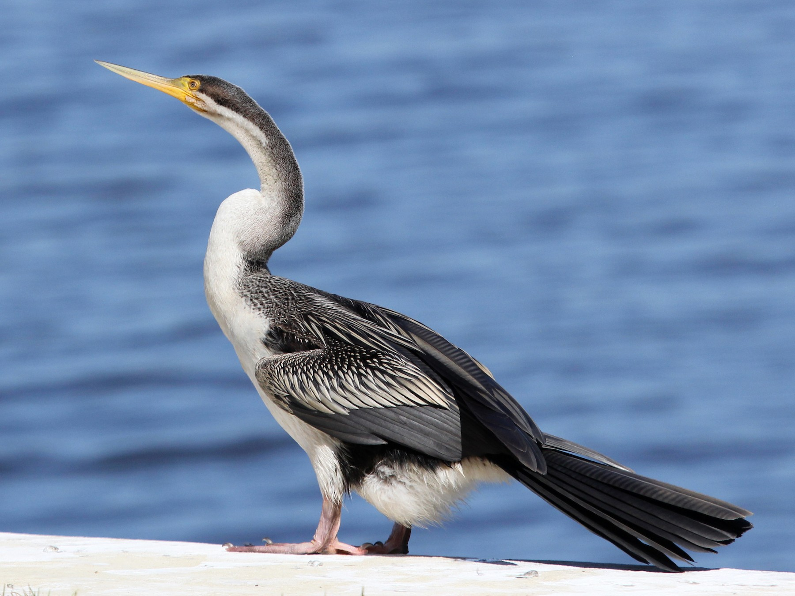

Anhinga novaehollandiae
The Australasian Darter is a slim waterbird with a long snake-like neck, sharp pointed beak and a long, rounded tail. The males are dark brownish black with glossy black upperwings, streaked and spotted white, silver-grey and brown.